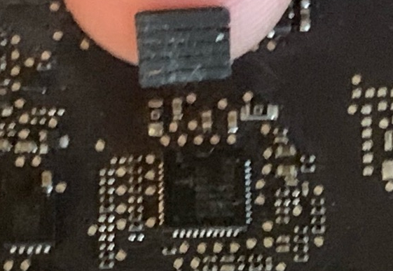
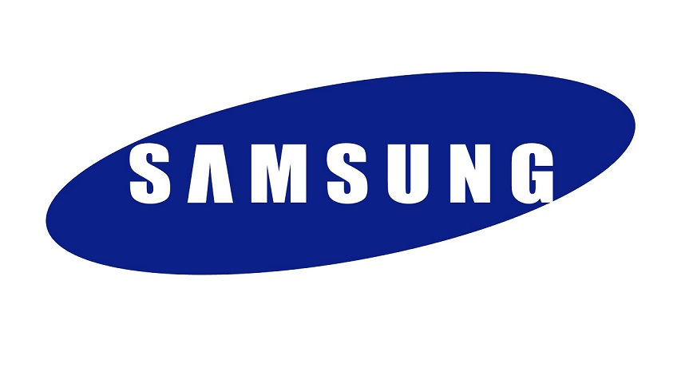

Introdução
Pense diferente… Quando eu vejo essa frase eu imediatamente a comparo com a "Think Better" ou "Think Correctly" que os usuários do BSD geralmente utilizam, e certamente não interpreto ela da maneira que a Apple desejava na sua campanha de marketing mais de 20 anos atrás. Para mim hoje é um atestado do quão torto você tem que se forçar a pensar para tentar defender uma empresa que te pisa rotineiramente.
Se você é alguém que se interessaria em entender um pouco mais de especificações, políticas, conceitos e o ambiente atual da tecnologia, eu recomendo que você leia até o final, se você já tem uma opinião formada sobre a Apple e não quer se frustrar ou se enfurecer, NÃO LEIA ESTÁ PÁGINA!
A Apple para quem não é apenas um consumidor leigo
Se você trabalha com TI assim como eu diariamente você tem algum cliente todo santo dia que tem certos problemas com certos dispositivos, e quando se trata de explicar um erro de engenharia de um dispositivo de qualquer outra marca você vai ver o seu cliente gritando "Eu jamais vou comprar essa porcaria de marca de novo! Eu não acredito que eles fizeram essa cagada! Que coisa idiota!" (aquele maldito curto nos HD's de notes da Posi**** me vem a mente agora) Mas por alguma caralha de motivo quando se trata da Apple, não importa o quanto ela enraba o consumidor, este vai continuar a comprar Apple e até mesmo continuar defendendo a empresa que os enrabou, mesmo que eles pagaram um preço de luxo por uma marca de luxo (famigerado custo Apple) e receberam um produto de merda.
Hoje eu venho trazer para você um conceito que não vem da Apple e sim dos BSD's (que são somente um os responsáveis por fazer parte dos "motores" dos sistemas operacionais da Apple) que não é necessariamente pensar diferente, e sim, pensar melhor! Pensar além! Em termos de durável, reparável e utilizável.
Eu sei que existe um culto à história da Apple nos dias de hoje (que inclusive é bastante merecido e falaremos dele mais adiante) mas eu gostaria que você visse a Apple não mais através da lenda, mas através de uma perspectiva do presente, de quem tá mais preocupado com a engenharia do que com marketing.
Vamos voltar ao modelo A1226/A1260 do MacBook Pro, chegaram ao mercado em 2008, essas máquinas tinham sérios problemas com o chip gráfico 8600GT da Nvidia. Pra ser justo, não é só uma questão de problema de arquitetura da Apple já que a fabricante dos chips é a Nvidia, que proveu chips de péssima qualidade para as fabricantes de notebooks. A Apple não tem 100% de culpa por ter criado esse produto maaaasss eles tem 100% da culpa no que diz respeito a como esse problema foi tratado. Ao invés de simplesmente trocar o pcb (leia-se placa) o que eles fizeram foi exigir que em caso de suporte, um técnico da Apple rodasse um teste no OS que confirmasse o problema no chip gráfico da máquina... Se você entende um básico de computação e não sabia dessa história provavelmente você tá rindo do quanto eles tiraram o consumidor de otário nessa, e se você não manja tanto eu te explico: Máquinas com chips gráficos defeituosos não são capazes de rodar testes de sistema, pois elas são incapazes de iniciarem o sistema, elas simplesmente não ligam.
Ou seja, para confirmar que o cliente tinha direito a garantia a máquina tinha que realizar POST e BOOT no sistema operacional para rodar o teste MAS as máquinas que tinham esse problema certamente não dariam BOOT no sistema operacional. E adivinha? Isso garantiu pra Apple simplesmente não dar o suporte a esse cliente e ainda cobravam de 200 a 500 dólares do otário por um erro de engenharia+suporte que eles mesmos criaram.
Não só isso, essa máquina é bastante conhecida por problemas de engenharia de estrutura. Geralmente para que se mantenha uma montagem firme, a dobradiça dos notebooks é parafusada na parte traseira do conjunto da tela, já que essa peça vai ficar se movendo para frente e para trás... A Apple por alguma caralha de motivo resolveu "pensar diferente" e parafusar as dobradiças diretamente no frame… De alumínio... Que se move pra frente e pra trás... Você não precisa ser nenhum engenheiro pra saber a bosta que deu.
Com o tempo não só essa fina lâmina de alumínio se rompia como fazia com que a tela simplesmente caísse após algum tempo de uso.
Agora vamos para o MacBook Pro A1226, que embora a Apple o vendia como um suposto corpo único no frame mas na verdade eram 2 peças coladas juntas... É sério... E óbvio que isso vai quebrar beeem fácil.
Se buscarmos entender como a máquina foi construída podemos também entender como o problema ocorreu, e é simples de entender: As ventoinhas na base do notebook vão empurrar o calor para a parte traseira... De uma máquina que tem 2 peças de alumínio coladas... Que não é peça única... Faça as contas no que vai acontecer.
Criar uma máquina de 1200 dólares que se quebra sozinha se você a utiliza é uma coisa, maaass mas não ter nenhum tipo de programa de recall ou mesmo uma garantia extendida, vendendo como feature um erro de engenharia que você mesmo criou... Isso sim é ter classe em fazer os outros de otário. É o tipo de "pense diferente" que só acontece em produtos Apple mesmo...
Diversas dessas máquinas sofrem de um problema de morte súbita, já que o chip mCP que trabalha como ponte norte, ponte sul e chip gráfico (bem vindo aos erros de arquitetura de 2004, Apple) não recebe energia necessária para ligar, por causa de um capacitor mal dimensionado. Se você viu mac's mortos que foram fabricados em 2008~2009 são grandes as chances de que esse é o problema.
E isso não se limita aos notebooks, em 2010 a Apple lançou o iPhone 4, esse telefone é responsável pelo meme do "você tá segurando errado"… Sim, os engenheiros da Apple fizeram a engenharia de um aparelho de telefone que se presume uma "maneira certa" de se segurar, e se você não o segura de uma maneira específica o sinal simplesmente vai pro saco. Se qualquer outra empresa lança um aparelho em que você o segura e ele para de funcionar você pode ter certeza que vai rolar processo e que a empresa vai a público pedir desculpas e fazer recall, no caso da Apple? Ela simplesmente lançou uma capinha por algumas dezenas de dólares pra você segurar o aparelho "da maneira correta", pois não é uma questão de falta de engenharia de antena e estudo de ergonomia, nãaao, os seus usuários que são o problema por segurarem o telefone com os 5 dedos mesmo... O iPhone 5 tinha problemas no botão power que só foram resolvidos depois de muitos usuários reclamarem que"um aparelho de 600 dólares não deveria morrer em 1 ano de uso".
Em 2010 eles também lançaram um notebook novo... Com o mesmo erro de engenharia no capacitor dos modelos citados anteriormente, na verdade é basicamente pelo fato dos circuitos serem idênticos... É sério.
2011 chega e certamente a Apple adquiriu a capacidade de fabricar um notebook que dura mais de um ano, certo? Bom, que tal as falhas de GPU dos MacBook Pro com as placas 8202915. Dessa vez ao menos uma firma entrou com uma ação coletiva e o que não faltou foi evidência das falhas de engenharia desses produtos.
"Então eles finalmente entregaram pcb's novos para resolver os problemas dessas pessoas né?" Eu não falei nada sobre novo, o que eles fizeram foi uma ressolda porca que basicamente fazia parecer que jogaram uma parte da placa na churrasqueira e esperaram as peças se soldarem de novo.
Em 2012 com o lançamento do Retina MacBook Pro eles consertaram tudo né?
Não.
Um chip dessa máquina veio com um problema de simplesmente se descolar do pcb devido ao péssimo material de solda, que se você fizesse a gambiarra de apertar ele contra a placa ela voltava a funcionar temporariamente, aí eu te pergunto, o que você acha que a Apple fez?
- Pegar as placas problemáticas e fazer uma solda decente
- Fofar um pedaço de borracha na placa pro chip não sair do lugar
Bom, a resposta é essa:
Chega 2013 e eles ainda não foram capazes de fazer algo que não fosse bomba, que não fosse colado ou que tivesse algum pedaço de borracha fofado, que não tivesse algum chip derretendo dentro da case ou coisa do tipo. E devido ao desespero apelaram por fazer uma máquina que tinha o mesmo formato que um filtro de ar, assim com o Mac Pro ao menos eles conseguiram fazer uma máquina que não morria com 1 ou 2 anos de uso certo...?
Nah, teve programa de recall pra ele também. Uma máquina que foi dimensionada literalmente nos moldes de um filtro de ar... E eles venderam essa máquina por 3 anos seguidos com o mesmo preço de 2013, e o que os fãs da Apple fizeram? O de sempre, eles compraram! Então se você foi o trouxa que comprou essa porcaria em 2016 eu imagino sua cara ao tirar da caixa um produto novo e ter cuspido na tua cara um "Mac Pro 2013" depois de pagar um preço de hardware premium da época.
Em 2014 a Apple trouxe o iPhone 6 e 6+ que tinha um problema de barras verticais aparecendo na parte superior da tela, e isso acontecia pelo fato do material escolhido para o telefone ser vagabundo demais para suportar ser colocado no bolso... Eu não tô falando de um aparelho que vai se entortar num teste militar com exigências de toughbook usado pela NSA, eu to falando de um celular de centenas de doletas que entorta num bolso da calça! Obviamente eles foram (mais uma vez) processados e fizeram um programa de garantia extendida, que por 149 doletas você trocaria o seu aparelho por um outro aparelho, feito com os mesmos materiais... Você já sabe onde vamos chegar com isso né?
Bom, eu poderia ficar o dia todo citando 1001 falhas da empresa mas meu objetivo como disse anteriormente é te municiar com conhecimento, os aparelhos da Apple de maneira geral passam por um ciclo que é mais ou menos assim:
- Alguns membros publicam relatórios do problema e relatam à Apple
- Sem resposta da Apple
- Acontece um aumento do número de pessoas relatando o mesmo problema
- Sem resposta da Apple
- Os apologistas da Apple descartam os relatos como muito raros, resultado de trollagem ou exagero e drama
- Ainda mais relatórios do problema
- Sem resposta da Apple
- Notícias do problema chegam a blogs
- Os apologistas da Apple descartam os blogs como simplesmente engajados em clickbait
- Sem resposta da Apple
- Aqueles afetados pelo problema ameaçam uma ação coletiva
- Os apologistas da Apple criticam a má natureza dos consumidores
- A Apple reconhece a legitimidade do problema
- Os apologistas da Apple ficam em silêncio
- A Apple lança uma atualização para corrigir o problema OU Eles criarão um "programa" para resolver o problema
- Apple ganha alguma publicidade positiva
- Os apologistas da Apple aplaudem a Apple por fazer a "coisa certa" (para um problema que eles anteriormente disseram que não era realmente um problema)
- A experiência de primeira mão com o “programa” revela diretrizes e restrições muito rígidas que reduzem muito o número de clientes afetados que podem participar do programa.
E isso que me incomoda! É um elefante branco que todo mundo se nega a comentar pois é uma percepção de tecnologia que todo mundo tem, MENOS quem estuda tecnologia. É como se você engenheiro mecânico acordasse amanhã e por algum raio de motivo o Fiat Marea 5 caneco fosse um ícone eterno de boa engenharia, endeusado e aplaudido por toda a população mundial enquanto nós, estudantes, engenheiros e mecânicos berramos pra população que isso é uma bomba pra pegar trouxa e mesmo assim ninguém tá nem aí em pagar 1 rim pra uma tecnologia que é sabidamente defasada e problemática.
O pessoal pegou a Apple pra Deus e até hoje tem gente pagando mais de 3000 reais num notebook DualCore de resfriamento passivo! Que depente de throttling pra não pegar fogo! 'Cês tão maluco? Eu vejo gente pagando mais de 3000 reais em smartphone pra usar instagram e Whatsapp! Eu faço deploy de sistema com meu smartphone que eu sequer paguei 1500 reais, meu smartphone emula bem jogos de GameCube e você precisa de pagar mais que eu apenas pra rodar Instagram e Whatsapp? "Ah mas a câmera do iPhone é melhor" Mais um mito que um bando de otário criou pra tentar justificar o apelo a marca, NÃO jovem, a camera do iPhone não é melhor pra quem quer tirar uma boa foto, a câmera do iPhone tem 1001 gambiarras pra você ficar munitinho em foto de status de Whatsapp, e se seus pais juntaram 3000+ reais pra te dar um de presente eu espero que você faça valer o dinheiro deles e não resuma o uso desse aparelho em tirar fotinho pra Instagram e Whatsapp, e se você trabalhou pra comprar com os seus 3000+ reais você já deveria ser maduro o suficiente pra não gastar 3000+ reais num celular só pra tirar foto e fazer média!
"Ah mas compara com a camera do Android no Samsung..." Que camera do Android seu animal de teta? Android é um sistema operacional! E por mais que sistema operacional faça uma ponte com a câmera o fator determinístico é como o driver pra câmera é escrito pelo fabricante e, aliás, eu tenho uma notícia pra te dar... A APPLE NÃO FAZ AQUELA CAMERA INTERNAMENTE!
Sim, isso mesmo que você leu, a Apple nos dias de hoje basicamente não faz quase nada 100% internamente, deixa eu matar esse mito de uma vez: Não existe mais "tecnologia Apple"! Deu pra entender? Na verdade, muitos dos componentes do iPhone são feitos por ninguém mais ninguém menos do que aaaaaa....
SIM! EXATO!
Sabe o Samsung que tu tanto joga pedra comparando com o teu iPhone? Saiba que a Apple utiliza diveeeersas tecnologias daquele Samsung.
Alguém criou essa falsa equivalência de que de um lado tem iPhone e do outro lado tem Samsung, e que esses são as melhores representações de iOs versus Android. Deixa eu desenhar pra você: - iOS, é um sistema operacional fechado e proprietário desenvolvido pela Apple para os dispositivos da linha iPhone. Portanto, iPhone é uma plataforma.
Android, é um sistema operacional, desenvolvido por diveeersas empresas (a Google é uma dessas empresas e não A empresa), de código aberto, baseado em Linux que pode ser modificado e instalado em qualquer plataforma, aparelho, de qualquer marca ou modelo.
Dizer que iPhone não trava e ANDROID trava é estúpido, não existe O APARELHO Android, existe um código que pode ser feito e implementado por qualquer um e em qualquer máquina que desejar (inclusive em moldes bem próximos de um iPhone).
O que geralmente acontece é que a maioria das pessoas comparam um a experiência mais comum com o Android (que geralmente é um aparelho de entrada que custa menos de 1000 reais) que por via de regra também permite que você instale qualquer porcaria (e geralmente instalam mesmo), com uma tecnologia fechada que tem um custo de entrada de 3000+ reais… É SÉRIO QUE UMA TECNOLOGIA DE CUSTO DE ENTRADA DE 3000+ REAIS É MELHOR DO QUE UMA TECNOLOGIA DE MENOS DE 1000? Aí fica fácil né jovem? Mas e quando você compara o iPhone com uma plataforma com uma diferença de preço menor?
Se eu for comprar hoje o Oneplus 8T (que não seria a minha primeira opção), da pra conseguir na faixa de mais ou menos 3,300 reais enquanto (pra ser amigável) da pra comparar com um iPhone 11 de 4100 reais... Ohhh boy...
Tela?
- Oneplus 8T tem uma tela de 1080 x 2400 x 120hz Amoled
- iPhone 11 tem uma tela de 828 x 1792 x 60hz LCD
Desempenho?
- Oneplus 8T tem score de 595.000 no Antutu v8
- iPhone 11 tem score de 521.227 no Antutu v8
Ram?
- Oneplus 8T tem 8gb LPDDR4X RAM
- iPhone 11 tem 4gb LPDDR4X RAM
Na verdade em basicamente quase todo o aspecto o Oneplus 8T ganha e ainda assim por alguma caralha de motivo o iPhone 11 ainda é mais comprado aqui no Brasil...
"Ah mas o processador da Apple é melhor, o sistema, a câmera…" Deixa eu repetir pra você: Não existe mais tecnologia da Apple! Lide com isso! A Apple até pode ter um processador único, mas é exatamente a mesma arquitetura ARM que todo mundo usa, a Apple pode ter uma câmera que só é usada no iPhone, mas a tecnologia daquela câmera é feita por empresas externas a Apple que vendem pra todas as outras marcas no mundo também, e se você acha que o iOS não bebe em nada do código do Android eu tenho uma ponte pra te vender...
O pessoal acha que existe alguma magia negra que a Apple possui que faz com que seus dispositivos simplesmente sejam os melhores, acha que a Apple é inovadora (eu tive ataque de riso quando vi a Apple vender o swipe keyboard como inovação), e isso gera situações bem engraçadas as vezes.
Teve uma vez na faculdade, tinhamos aula de arquitetura de computadores, nessa época eu era colega do meu brother que vou chamar de Léo Áquila do agreste (para fins de anonimato, alías abraços aí man), que era aquele clássico exemplo de "racecar johnny" da tecnologia: É o cara que quer facilidade! Ele não é o cara que vai passar madrugadas estudando como compilar um custom kernel mas você pode ter certeza que ele vai comprar o que há de mais conveniente em termos de tecnologia e instalar uma custom rom pra extrair o máximo do aparelho que tem.
Na minha sincera opinião esse é o exemplo do usuário perfeito para se medir parâmetros nesse sentido: ele é o cara que não tem resistências em migrar maaaas também não faz sacrifícios por isso, ele tem a melhor experiência pelo menor preço da maneira mais conveniente possível. E nessa época da facul, eu também era colega de um cara que é o clássico normie, o technoob, que soa até engraçado pois ele tem um cargo interessante numa loja de informática da cidade.
Naquela época eu já tinha utilizado iPhones mas nunca tive um como daily driver (não suporto tecnologia fechada), então eu conhecia o suciciente da tecnologia mas não me interessava muito na experiência de uso, tava quase no horário da prova quando meu professor entra pela sala e diz:
"Booooa noite! Logo vamos começar a prova, é permitido consulta no celular mas já aviso que vocês não vão achar nada de útil pra essa prova na internet."
(Era uma prova tensa de arquiteturas e tinha umas coisas que eram um tanto quanto impossível de decorar, daí a consulta)
Na época a infra de rede da faculdade tava com problemas e o professor resolveu por enviar um material no note por bluetooth para um colega, e este colega enviaria pra outro e assim sucessivamente (como plano B), quando meu amigo Leléo ao fundo da sala escutou o professor, olhou para o iPhone do nosso colega normie e começou a rir, eu fiquei sem entender, e se você tinha iPhone nessa época você já sabe o problema, ele disse: "iPhone não recebe assim por bluetooth".
Eu achei que fosse zuera, até que o normie confirmou e eles arrumaram uma maneira de enviar o maldito pacote de arquivos... Mas eu fiquei com isso em mente, como diabos alguém paga tanto num aparelho que sequer tem condição de enviar e receber arquivos por bluetooth?
Mais engraçado ainda foi quando o normie soltou um: "Ué, mas iPhone é o melhor né não?" e eis que responderam: Você tá numa faculdade de tecnologia, lá fora isso pode impressionar alguém, aqui dentro não.
Eu lembro até mesmo que existiu um período que o iPhone sequer tinha a opção de copiar e colar... Até meu Nokia 5200 fazia isso...
E a razão disso é muito simples, a arquitetura do iPhone é baseada em servir quem consome tecnologias proprietárias, não é para servir quem cria e nem quem compartilha mídias/softwares a esmo (se não por tecnologias proprietárias de terceiros).
E isso é visível até mesmo no marketing da Apple, não existe um espírito de desenvolvimento tecnológico, não tem specs, só buzzwords mesmo.
O verdadeiro legado da Apple
Quando Woz trabalhava para a HP, o seu contrato declarava que tudo que ele criasse deveria ser mostrado ao executivos da HP... E então, ao mostrar o seu Apple I para um dos executivos ele disse: “Steve, você disse que este... Aparelho... É para pessoas comuns... O que diabos uma pessoa comum ia querer com computadores?”
Será que ele se enganou?
Se você acha que este homem se enganou ao dizer isso, você está longe de entender o quão grandioso, significativo, e revolucionário foi o legado de Wozniak e Jobs... E especialmente COMO foi.
Não vou falar sobre como a Apple começou e como ela se desenvolveu como empresa pois há muito material por aí na internet sobre isso, na verdade eu recomendo fortemente que antes de ler essa página você assista ou re-assista o filme piratas do vale do sílicio antes de continuarmos com o tema, caso você não tenha um conhecimento algum desse assunto, tranquilo?
Então, se você assistiu piratas do vale do sílicio e/ou tem alguma noção, (ou mesmo nem assistiu e só quer terminar de ler) a história é a mesma: Jobs e Wozniak transformaram o conceito de computador de algo que era nada mais nada menos que uma supercalculadora, servidor ou um sistema de gerenciamento corporativo para o que hoje deixa o computador mais próximo de uma central de mídia/assistente pessoal, sim, o computador que esse tal executivo dizia não fazia o que você hoje considera como “funções básicas” como acessar o facebook, tocar músicas e transferir fotos do seu celular.
Eles criaram features que garantiam ao usuário a sua usabilidade completa desde o momento que ele tirava o computador da sua caixa, um sistema in-a-box, preparado para o uso e que não exigia perícia nenhuma do usuário para lidar com o seu computador, e mesmo assim, garantia o uso da máquina de todas as formas possíveis que eram necessárias para o usuário final naquele tempo.
Máquinas de arquitetura única, com um sistema dedicado, usabilidade descomplicada e uma política de segurança e suporte precisas, design inovador e durabilidade garantiram o usuário comum a capacidade de lidar com computadores, que não precisavam mais de altos níveis de conhecimento de linhas de comando para manipular as máquinas, apenas serem alfabetizados e ligarem a máquina.
Também revolucionaram os celulares trazendo um conceito de “smartphone” como conhecemos hoje uma realidade, “um telefone... Um iPod... E internet...” assim Jobs trazia algo que ia além de um mp3, um pda, um navegador, um celular e uma camera. Inclusive recomendo a todos esse vídeo, vejam a apresentação de jobs em 2007, ainda que em inglês, é impressionante o modo que Jobs trazia esses conceitos capazes de mudar os padrões que conhecemos.
Se você prestou bastante atenção no que eu estou apresentando aqui já deve ter entendido onde eu quero chegar e eu não vou mais me estender: A Apple de hoje não faz isso!
Mas ainda assim a empresa continua forte (perdendo mercado mais ainda assim forte), continua com um público que a endeusa, continua com pessoas que investem na tecnologia e nome da Apple dessa época, e me perdoe caso por falar dessa forma, mas isso é uma questão de burrice.
Sim, eu realmente creio que se as pessoas hoje usam e pagam por isso, na grande maioria é por falta de conhecimento e nessa página da pra mostrar pra vocês o motivo da minha antipatia pela Apple atual.
Quando alguém compra um dos sistemas da Apple nos dias de hoje, alega que tem mais velocidade, é mais responsivo... É melhor... Será?
Em outros tempos, qualquer dinheiro investido em sistema Apple era um bom investimento, Mac? Usava um processador "próprio", de arquitetura desenvolvida com muita proximidade e com um resultado muito superior aos outros, fez o mesmo que o Playstation 3 em seu tempo: Não existia nada similar! absolutamente nada, e em qualquer comparação ficava claro a superioridade de um sistema feito de maneira dedicada, com componentes ESPECÍFICOS sobre sistemas digamos... "Variáveis".
E a Apple se garantia muito bem pois não havia nenhuma outra fonte para esse tipo de tecnologia que não eles mesmos, nem a IBM era páreo para a Apple no mercado em que ela servia, na verdade a própria Apple foi responsável por bater de frente com o CONTROLE DA IBM (GUARDE ISSO EM MENTE).
O povo naqueles tempos conseguiu entender o que nós acadêmicos e ex-acadêmicos do mundo da tecnologia quase sempre soubemos: Não existe "melhor", existe o que é mais adequado para determinado uso.
Por essa simples lógica eu deixo no chão essa história de “Apple é melhor”... Isso simplesmente não existe, se é melhor, melhor em que? São frases que não expressam nenhuma lógica, são só gritos de torcida.
Quando se fala em preço? Os preços da Apple são realmente altos, mas como eu já deixei claro, sim, já valeu a pena pagar CADA CENTAVO por um sistema desses... Mas preço é irrelevante quando não julgamos o VALOR das coisas, então preço vai ser o último prego no caixão dessa velha história que infelizmente ainda está oculta para a maioria das pessoas, então por favor reparem cada aspecto que eu destaquei aqui.
“A apple tem o melhor design”
Primeiramente vamos entender o conceito de design para a computação, design pode ser desenhar um produto ou sistema, e isso segue da sua aparência até sua funcionalidade e usabilidade. E quando falamos da Apple atual não só vemos um design obsoleto e mal dimensionado, mas as vezes nada além de um design burro. Mas não vou falar novamente de toda a história das mancadas da Apple, vamos nos focar no atual, quais são os seus produtos HOJE?
Se vários iPhones entortaram no bolso dos usuários, qual o signigicado óbvio disso...? Isso deixa claro uma falha gritante no que diz respeito a design/engenharia do aparelho, é óbvio que um produto que não cumpre com o seu objetivo é uma falha de projeto (sem contar o que isso significa em questão de respeito com o consumidor).
Quanto as especificações? Nada com tecnologia única, geralmente processadores, ram e armazenamento bem inferiores aos concorrentes. Além disso o que me assusta é como um consumidor pode sair defendendo uma empresa dizendo que “Apple é melhor” e a mesma vende um smartphone de 3000+ reais que quebra no bolso e tem uma configuração tão ridícula?
E o que é o Mac hoje? Houve uma época que se usava processadores quase que dedicada para o Mac, a Apple da época fazia questão de evidênciar isso e eles realmente eram superiores graças a essa arquitetura, mas hoje? O Mac usa um processador Intel i5 genérico como em qualquer outro laptop por aí (embora finalmente isso esteja mudando).
Não passam de máquinas com uma case bonitinha! Eles usam os mesmos processadores (na grande maioria dos produtos), a mesma ram que qualquer outro pc, usam os mesmos componentes que qualquer outro pc e a única diferença hoje é o sistema operacional que hoje em dia basicamente tem a mesma quantiedade de vírus sendo criados que o Windows (isso que era uma grande desculpa dos usuários de Mac para justificarem o uso do sistema).
Na verdade você paga caro por um laptop com case de alumínio e um logo da apple atrás... E é só isso. Duvída? Vá num site de compras e pegue o primeiro Macbook Pro e compare com algum outro pc da mesma categoria de preço e você vai ver a surra que a Apple vai levar. Aliás se você também quer levar em conta confiabilidade e durabilidade saiba que a Apple não é nem de longe a empresa que ocupa o primeiro lugar.
Algumas pessoas dizem que para designers, editores de vídeo e produtores de música um Mac é essencial... Vocês fazem idéia do quão ridícula essa ideia é? Na verdade esse mito surgiu por razão da Apple ter sido uma das primeiras marcas (e não a primeira!) a dar suporte a esse público… Numa época em que basicamente não existia alternativas... ESTAMOS EM 2021!
Não só temos softwares em todos os níveis e para todos os publicos, mas todos os preços marcas e sistemas, o que se precisa para realizar essas funções são comuns em quase todos os pcs. Não estamos mais numa época em que você precisava comprar e plugar um Roland MT-32 no pc pra ter som em seus jogos.
O que acontece de verdade é a teimosia do consumidor em se manter ignorante, a Apple cultiva o consumidor que não quer entender de informática ou mesmo de simples especificações e quando esse consumidor compra um produto da Apple ele vê as inovações que a Apple está trazendo em comparação com a própria Apple! Mas não o compara com os outros aparelhos do mercado, fazendo com que tudo que a Apple venha a trazer tenha seja maravilhoso na vista DESSE consumidor...
É claro, se você tem opções limitadas praticamente qualquer coisa vai ser uma novidade, e se você não é crítico de nada qualquer estagnação pode ser aceita. Depois que o cliente já vendeu um rim pra comprar... Só resta tirar fotinho com um sorriso no rosto mesmo, pois apesar do seu amigo ter um smartphone ou um pc muito mais potente... Hey... Eu tenho um Apple... Seja lá o que isso signifique....
E perceba que isso é um ciclo: O cliente é desinformado, investe na Apple que faz coisas ultrapassadas e cobra caro e usa essa diferença entre o produto e seu preço de custo fazendo um belo marketing ao consumidor que pagou, e daí só resta dizer que está satisfeito.
Me fala como anda então o fio do seu carregador, me fala sobre o sistema de ventilação do seu Macbook, me fala sobre o display que é colado junto a carcaça como eram os laptos de pré-2007, me sobre o seu sistema que tudo que você vai fazer é sempre “da maneira da Apple”, me fala como você faz para passar uma música do seu iPhone ou iPod para seu laptop ou desktop de maneira direta... Ah é, pra você basta ter o app do palco mp3 ou Spotify instalado para ouvir as músicas que você gosta, bom me parece que você está resolvendo um problema com outro problema... “Mas a apple tem exelentes políticas de segurança”, ah é? Tenta instalar um aplicativo de origem desconhecida em um Android vanilla e vê o que acontece.
Acho que isso basta. O grande problema aqui não é uma questão de diferença tecnológica, e sim um problema de desinformação. As pessoas ficam dias na fila esperando para comprar esse tipo de produto que não as permite um mínimo de usabilidade pois não é uma questão de engenharia, é marketing! "Usuário de Mac/iPhone" não define um grau de exigência em engenharia, define um culto a uma marca!
As pessoas clamam por aparelhos que não travam no seu ecossistema mas elas convenientemente esquecem de dizer o quão travado é esse ecossistema em primeiro lugar, todas essas políticas e métodos desnecessários em que a única que se beneficia disso é a pŕopria Apple. Eu entendo que existem certos nichos do mercado em que por exemplo um Mac é a melhor opção, eu conheço alguns empreenderores que fazem o melhor uso dessa tecnologiam eles sabem o essencial do uso de tudo que serve para o seu trabalho.
Se é o que há de melhor pra você que está numa faculdade de ciências da computação e precisa de ficar por horas em algum canto da lanchonete editando código dependendo da bateria do dispositivo tudo bem, se você apenas quer usar um produto da Apple, tudo bem, até mesmo se você SABE das incapacidades e usa Apple por que deseja MESMO ASSIM não há problemas, eu não tenho propriedade nenhuma para dizer o que é melhor pra você em todas as circustâncias, você mesmo deve descobrir isso, mas da mesma forma você não pode tratar o seu uso básico do computador como responsabilidade de outrem ou fazer julgamento daquilo que você não estudou. Se você por algum momento pensou que "Apple é melhor" e sequer sabe a diferença de RISC e CISC você deveria se envergonhar de tomar partido de fazer da tecnologia time de futebol.
Faça o favor de não sair por aí endossando o que a Apple faz como se fosse uma coisa revolucionária hoje em dia, como se o padrão Apple fosse tudo que há de bom quando você sequer sabe instalar o próprio sistema, diga no máximo “é o que eu quero adquirir”. O intuíto dessa página não é dizer que você não deve ou não pode usar e gostar desses padrões, dessa política, dessas especificações, não, essa página é para conscientizar as pessoas que destacam e endeusam coisas irrelevantes, ou ultrapassadas, pare de tratar a Apple num outro patamar, como se iPhone e Mac fosse algo diferente, além de um simples celular ou computador.
Passar de um pc socket 486 pra um laptop atual ou de um Galaxy Y pra um iPhone e dizendo “agora é muito melhor porque é Apple”, não! Agora é melhor porque você trocou uma tecnologia obsoleta por uma tecnologia mais atual, a grande inovação foi essa! Apenas! Essa é a grande diferença! É algo muito lógico, muito simples de entender: É claro que quem usou a vida toda um pc 775 da Positivo comprado em 2005 com um Windows XP falsificado instalado e muda para um computador relativamente atual na casa dos 3000 reais vai sentir uma diferença diferença astronômica mas não porque é um Mac! Mas por ter trocado uma tecnologia de 2005 por uma de 2015, de ter saído de 550 reais no Aliexpress por 3000 reais. Você ia sentir a mesma diferença se tivesse comprado um Avell ou MSI gaming (provavelmente uma experiência muito melhor).
Esse o tipo de desinformação que eu destruir aqui. Pessoas que respondem automaticamente “a Apple é melhor, o iPhone é melhor, o Mac é melhor” sem saber que fortalecendo o que a Apple é HOJE você não está só ignorando o que pode adquirir de melhor em termos de tecnologia mas destruindo o legado de Jobs e Woz, que foi criar computadores pessoais tão baratos e eficientes quanto possível, como eu já disse, foi criar sistemas voltados para usabilidade, com exclusividade de tecnologias por ser uma das primeiras a dar a cara a tapa de se aventurar em determinados nichos, o que eles fizeram foi sim algo poético, eles, se você gosta da Apple tudo bem, mas não destrua tudo isso por desinformação.
Sabia que existiu uma época que o slogan da Apple era "Faz mais, custa menos, é simples assim"?
Obsolescência Programada
Só um aviso final: Os produtos da Apple (por via de regra) perdem TOTALMENTE o seu suporte após 5 anos da data de fabricação... Muitos aplicativos podem simplesmente não funcionar... Lembre-se disso quando for comprar um produto da apple ;)